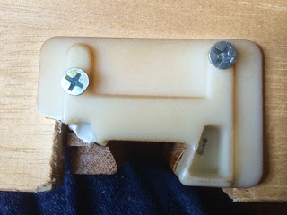
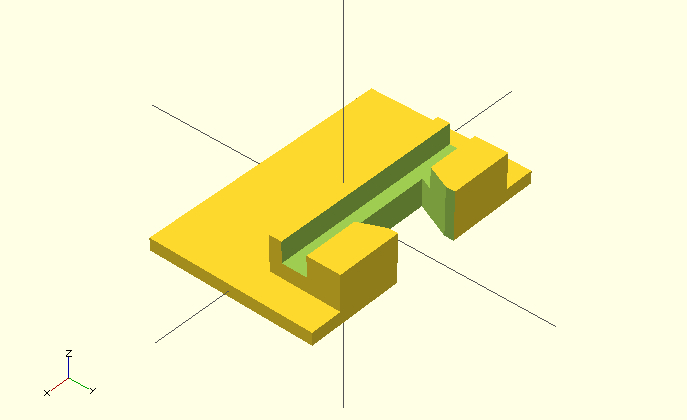
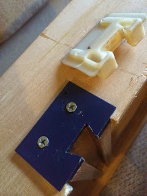
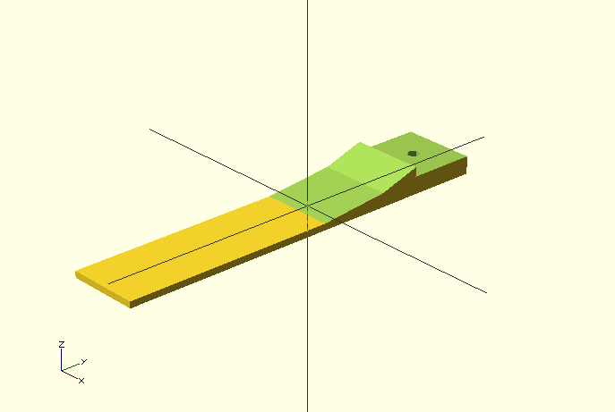
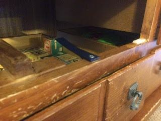

Coffee table drawer
Sat 19 July 2014 by Dr. Dirk Colbry

The kids have really done a number on our living room coffee table. The top has been "distressed" by biting, thrown toys and lots of drumming.

The drawers have also been used as steps to get up on top of the table. Most of the hardware components have broken under this level of used.

I decided that this would be a fun project for my 3D printer. There are a lot of drawer guides in thingiverse. I downloaded a few drawer guild stl files but none of them really fit my dawers:
http://www.thingiverse.com/thing:250839
http://www.thingiverse.com/thing:39023
I ended up having to design my own using a pair of calipers and OpenScad. I think they turned out great:


I also replaced 3 of the four drawer stops using another design developed in OpenScad:
 
After the flat part was printed I put it in a warm pan on the stove to soften the plastic a little so I could put an appropriate bend in it. Here is a link to my files if you are interested in working with them:
https://github.com/colbrydi/3D-Drawer
I also posted them on YouMagine.org
https://www.youmagine.com/designs/coffee-table-drawer-guild-and-stopper
Overall, I am happy with the results. And I am comforted in knowing that I can replace the parts again if the kids get destructive again.
- Dirk
Blogpost migrated from Blogger using custom python script. Comment on errors below.